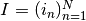
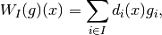
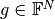
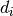

WeightedSumSamplingOperator¶
-
class
odl.operator.tensor_ops.WeightedSumSamplingOperator(range, sampling_points, variant='char_fun')[source]¶ Bases:
odl.operator.operator.OperatorOperator computing the sum of coefficients at sampling locations.
This operator is the adjoint of
SamplingOperator.Notes
The weighted sum sampling operator for a sequence  of indices (possibly with duplicates) is given by

where  is the value vector, and  is either a Dirac delta or a characteristic function of the cell centered around the point indexed by
 .
.Attributes
adjointAdjoint of this operator, a SamplingOperator.domainSet of objects on which this operator can be evaluated. inverseReturn the operator inverse. is_functionalTrueif this operator’s range is aField.is_linearTrueif this operator is linear.rangeSet in which the result of an evaluation of this operator lies. sampling_pointsIndices where to sample the function. variantWeighting scheme for the operator. Methods
__call__(x[, out])Return self(x[, out, **kwargs]).__eq__($self, value, /)Return self==value. _call(x)Sum all values if indices are given multiple times. derivative(point)Return the operator derivative at point.norm([estimate])Return the operator norm of this operator.